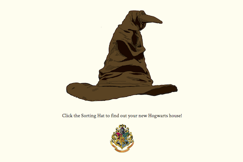

<div class="content">
	<div class="main">

		<div id="projects-main-gray">
			<h1 class="main-title">Sorting Hat</h1>
			<div class="extraPadding"></div>
		</div>

		<p>Which Hogwarts house do you belong to?  Find out on my Sorting Hat <a href="https://melanie-sorting-hat.herokuapp.com/" target="_blank">site</a>!</p>

		<p><strong>Goal:</strong> Create some version of the Sorting Hat from Harry Potter that sorts users into one of the four Hogwarts houses.</p>

		<figure>
			
		</figure>

		<p>The page has a book-like layout with two columns.  The left explains instructions with dialogue from Professor McGonagall in the Sorcerer's Stone.  By clicking on the Sorting Hat illustration on the right, you will be sorted into your Hogwarts house after a random delay while the Sorting Hat is "thinking".</p>

		<p>You can find the deployed Heroku app <a href="https://melanie-sorting-hat.herokuapp.com/" target="_blank">here</a> and my GitHub repo <a href="https://github.com/melanieps1/vue-sorting-hat" target="_blank">here</a>.</p>

	</div>
</div>